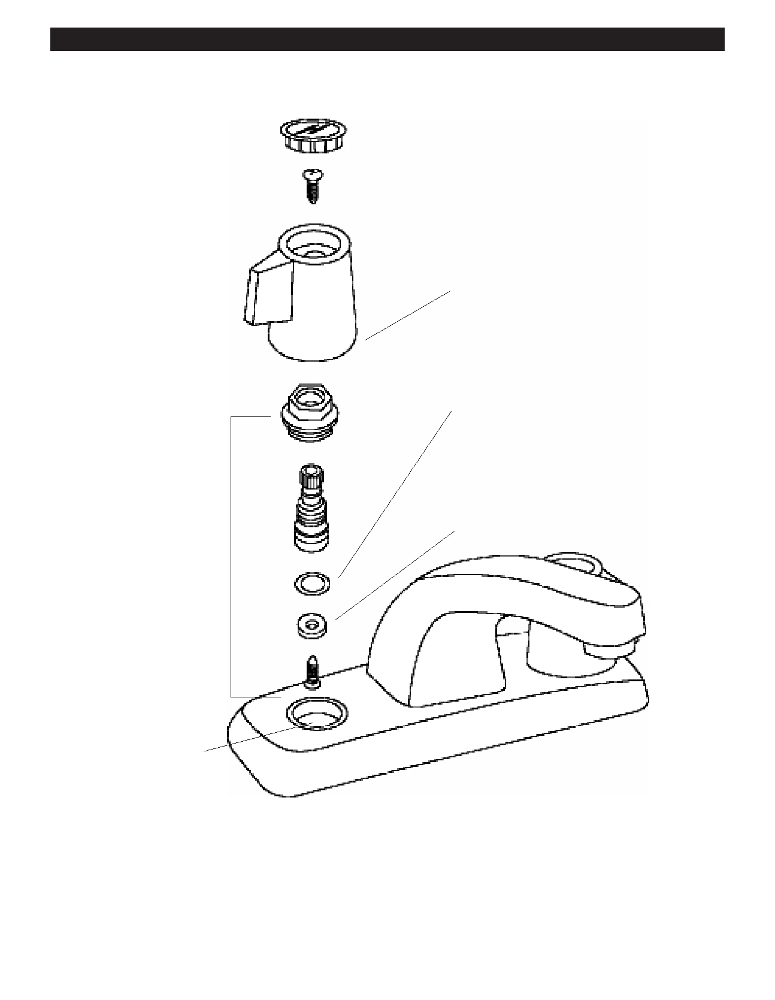

PA RT I C I PA N T R E S O U R C E G U I D E
Repairing a Compression Faucet (continued)
Handle
O-ring
Washer
Stem unit
Valve seat
How to Replace Valve Scat
1. Using a seat wrench, remove the valve seat. Choose the end of the wrench that fits the seat and put in into the faucet.
2. Get the seat out by turning it counterclockwise.
3. Install an exact duplicate.
34